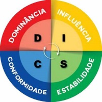

Seja bem vindo ao Portfólio, onde tem toda informação necessária sobre projetos criados, programas usados e serviços prestados por Clayton Santos Macedo.
Os olhos, significa a procura pelo caminho da sabedoria.
Projetos criados com informações fictícios, apenas para treinamento de boas práticas. (clique na imagem)

Comportamento pessoal com pontos fracos e pontos fortes, e evolução. (clique na imagem)